Introduction
Quand on commence un jeu de combat c'est toujours un peu compliqué de savoir par où commencer, on a deux choix qui s'offre à nous:
Soit jouer tranquillement en suivant le tutoriel puis le reste dans l'ordre ou soit on part directement se battre contre tout ce qui bouge en mode combat
Dans Dragon Ball Z Supersonic Warriors 2, on a le même principe:
Soit jouer tranquillement en suivant le tutoriel, puis faire le mode histoire et apprendre à jouer librement ou soit on part directement se battre contre le Mode Combat Z ou pour les plus fous le Mode Maximum
Mais ici on s'adressera à ceux qui débutent et qui souhaitent faire les choses bien. Cela se déroulera en 5 étapes
Etape n°1: Apprendre les commandes et les fonctionnalités des combats
Pour cela il faut aller sur le Mode Exercice du jeu et regarder ce qu'on peut y faire:
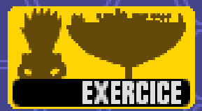
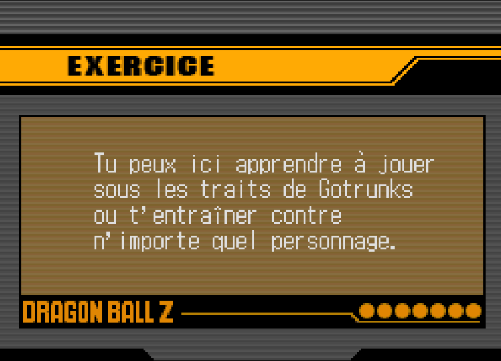
A partir de là on se retrouve avec un choix qui est le suivant:
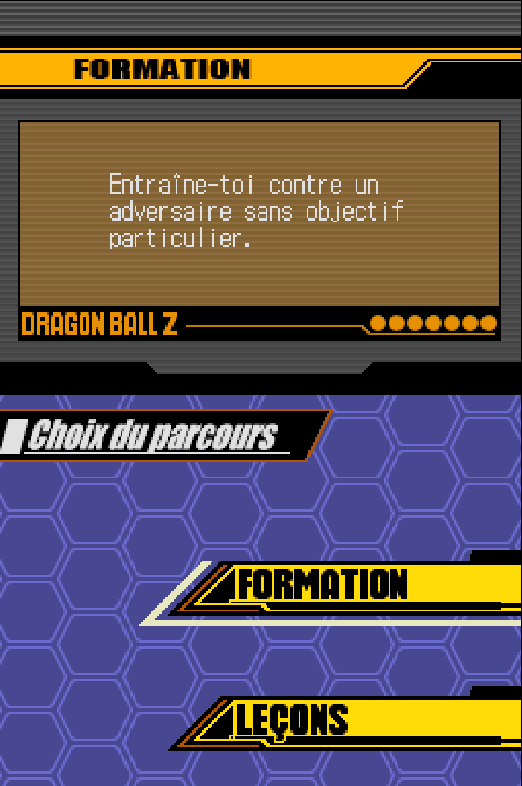
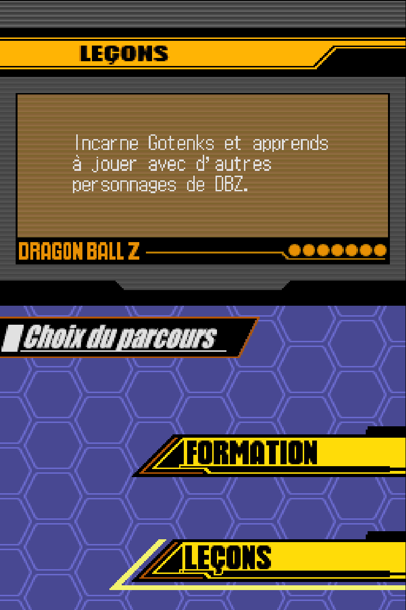
Choix n°1: Faire l'Entrainement Solo
Pour s'entraîner, rien de mieux que de pratiquer, on peut prendre un personnage dit classique comme : Goku, Vegeta, Piccolo, Krilin ou Gotenks et s'exercer dessus, d'ailleurs je vous conseille personnellement de vous entraîner au début avec ces 4 personnages là car ils sont assez simples à appréhender au début, notamment Goku, Krilin et Piccolo.
Autrement, vous apprendrez sur le tas, les coups forts et faibles, les attaques spéciales et tout ce qui compose le personnage.
Egalement pour ne pas être trop brouillon sur l'essai du personnage je vous invite à regarder ses données ici 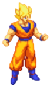
Après ça normalement vous pourrez déjà commencer à vous frotter aux autres modes de jeux.
Pour en savoir plus sur comment les personnages peuvent se jouer vous pouvez aller ici 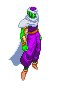
Choix n°2: Faire le Tutoriel
En soit pour apprendre tranquillement les touches et pouvoir les mettre en pratique, il n'y a rien de plus simple que le tutoriel du jeu, géré par Piccolo. On se met dans le contexte du combat contre Boo, en incarnant Goten et Trunks, (Gotenks en combat) qui doivent s'entraîner et apprendre les bases pour être prêts à se battre. Tout au long on apprendra les bases des bases, comme les déplacements, puis les attaques en passant par tout ce qui tourne autour du combat, le tout supervisé par Piccolo qui nous guidera à chaque fois.
Tout au long de l'entraînement, on aura certes Piccolo en guise de maître mais également les membres de la Z Team qui seront là pour nous épauler lors de l'apprentissage et ce de manière ludique comme on peut s'y attendre d'eux dans l'animé.
On en dira pas plus, vaut mieux aller voir comment se passe le tutoriel comme ça ce sera bien plus évident, passez ici 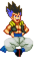
Etape n°2: Débloquer les personnages
Après avoir compris les contrôles, il est temps de débloquer des personnages bien plus puissants que Goku ou Vegeta forme de base, pour ça vous avez le Mode Histoire ou le Mode Maximum où dans l'un on peut débloquer les personnages plus ou moins facilement, parfois à condition de réussir des histoires alternatives, et d'un autre côté, il suffit d'enchainer des combats puis d'affronter une série de boss afin de débloquer un personnage à chaque fois que c'est terminé.
Pour avoir le Mode Maximum, il faut avoir fini le Mode Combat Z, avant.
Pour savoir comment réussir le Mode Combat Z, vous pouvez aller ici 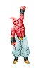
Et pour savoir plus en détail le Mode Histoire, vous pouvez aller ici 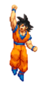
Etape n°3: Apprendre à choisir son équipe
Maintenant que vous avez tous les personnages du jeu, il ne vous reste plus qu'à créer votre équipe, ce qui n'est pas simple vu le nombre de personnage. Pour créer une bonne équipe, il faut déjà savoir, ce qu'on souhaite jouer et comment le jouer pour ça, les personnages du jeu peuvent être classés en plusieurs catégories, mais d'abord il y en a deux à distinguer:
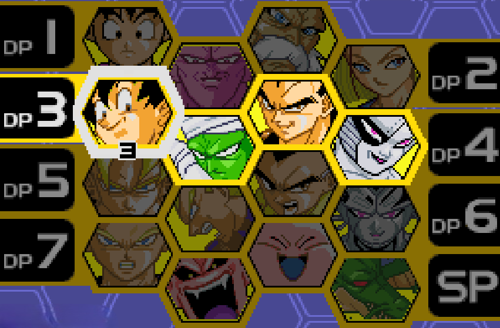
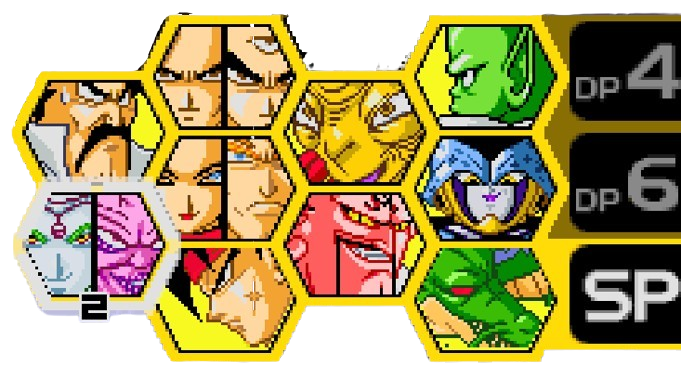
Pour les combattants, ils ont chacun leurs attaques et capacité propre à eux et pour les supports, ils ont une utilité pour certaines situations et certains sont encore mieux que d'autres.
Pour savoir plus en détail sur la maîtrise des personnages et les bonnes équipes à faire en fonction des DP possédés, il y a cette page ici pour tout vous expliquer.
Etape n°4: Affronter les modes de jeux
Après que vous ayez choisi votre équipe en fonction du nombre de DP que vous avez actuellement, vous pouvez vous tâter aux différents modes de jeux: